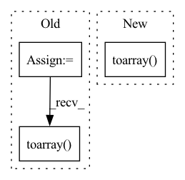

Pattern ID :11530

Before Change
def run(self, results: Dict[str, Any], resource: Resource):
assert results_available(results, "pre_process", "sentences"), "Sentences must be present"
tfidf = TfidfVectorizer()
tfidf_vectors = tfidf.fit_transform(results["pre_process"]["result"]["sentences"]).toarray()
task_results = {
"vectors": tfidf_vectors
}
return task_results
After Change
tfidf_model.fit(results["pre_process"]["result"]["train"]["sentences"])
task_results = {}
for split in ["train", "val", "test"]:
tfidf_vectors = tfidf_model.transform(
results["pre_process"]["result"][split]["sentences"]).toarray()
task_results[split] = {"vectors": tfidf_vectors}
return task_results
In pattern: SUPERPATTERN
Frequency: 3
Non-data size: 3
Instances
Fragment ID: 39193060
Project Name: fluidml/fluidml
Commit Name: 28f2885d3db0eb5555b308fbb33c428ff4fe1ff7
Time: 2020-12-24
Author: raj1514@gmail.com
File Name: examples/sklearn/with_gs.py
M Class Name: TFIDFFeaturizeTask
N Class Name: TFIDFFeaturizeTask
M Method Name: run(3)
N Method Name: run(3)
M Parent Class: Task
N Parent Class: Task
M File Name: examples/sklearn/with_gs.py
N File Name: examples/sklearn/with_gs.py
M Start Line: 59
M End Line: 64
N Start Line: 94
N End Line: 102
'>
Before Change
def run(self, results: Dict[str, Any], resource: Resource):
assert results_available(results, "pre_process", "sentences"), "Sentences must be present"
tfidf = TfidfVectorizer()
tfidf_vectors = tfidf.fit_transform(results["pre_process"]["result"]["sentences"]).toarray()
task_results = {
"vectors": tfidf_vectors
}
return task_results
After Change
tfidf_model.fit(results["pre_process"]["result"]["train"]["sentences"])
task_results = {}
for split in ["train", "val", "test"]:
tfidf_vectors = tfidf_model.transform(
results["pre_process"]["result"][split]["sentences"]).toarray()
task_results[split] = {"vectors": tfidf_vectors}
return task_results
'>
Fragment ID: 39193057
Project Name: fluidml/fluidml
Commit Name: 1e789cf21b7961ec070e6a1fd5696b9aec57f8c6
Time: 2020-12-24
Author: raj1514@gmail.com
File Name: examples/sklearn/without_gs.py
M Class Name: TFIDFFeaturizeTask
N Class Name: TFIDFFeaturizeTask
M Method Name: run(3)
N Method Name: run(3)
M Parent Class: Task
N Parent Class: Task
M File Name: examples/sklearn/without_gs.py
N File Name: examples/sklearn/without_gs.py
M Start Line: 60
M End Line: 65
N Start Line: 94
N End Line: 102
'>
Before Change
assert_array_almost_equal(laplacian.sum(axis=0), np.zeros(n_nodes))
assert_array_almost_equal(laplacian.T, laplacian)
assert_array_almost_equal(
laplacian, csgraph.laplacian(sp_mat, normed=normed).toarray())
assert_array_almost_equal(laplacian,
_explicit_laplacian(mat, normed=normed))
After Change
n_nodes = mat.shape[0]
explicit_laplacian = _explicit_laplacian(mat, normed=normed)
laplacian = csgraph.laplacian(mat, normed=normed, copy=copy)
sp_laplacian = csgraph.laplacian(sp_mat, normed=normed,
copy=copy)
if copy:
assert_allclose(mat, mat_copy)
_assert_allclose_sparse(sp_mat, sp_mat_copy)
else:
if not (normed and (np.issubdtype(mat.dtype, np.signedinteger)
or np.issubdtype(mat.dtype, np.uint))):
assert_allclose(laplacian, mat)
if sp_mat.format == "coo":
_assert_allclose_sparse(sp_laplacian, sp_mat)
assert_allclose(laplacian, sp_laplacian.toarray())
for tested in [laplacian, sp_laplacian.toarray()]:
if not normed:
'>
Fragment ID: 39193054
Project Name: scipy/scipy
Commit Name: effaf8c82c822a24754b77890e2c394c5b8eaeca
Time: 2022-01-03
Author: andrew.knyazev@ucdenver.edu
File Name: scipy/sparse/csgraph/tests/test_graph_laplacian.py
M Class Name: AnonimousClass
N Class Name: AnonimousClass
M Method Name: _check_symmetric_graph_laplacian(3)
N Method Name: _check_symmetric_graph_laplacian(2)
M Parent Class:
N Parent Class:
M File Name: scipy/sparse/csgraph/tests/test_graph_laplacian.py
N File Name: scipy/sparse/csgraph/tests/test_graph_laplacian.py
M Start Line: 29
M End Line: 46
N Start Line: 39
N End Line: 76